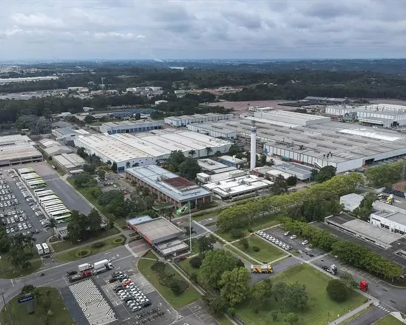
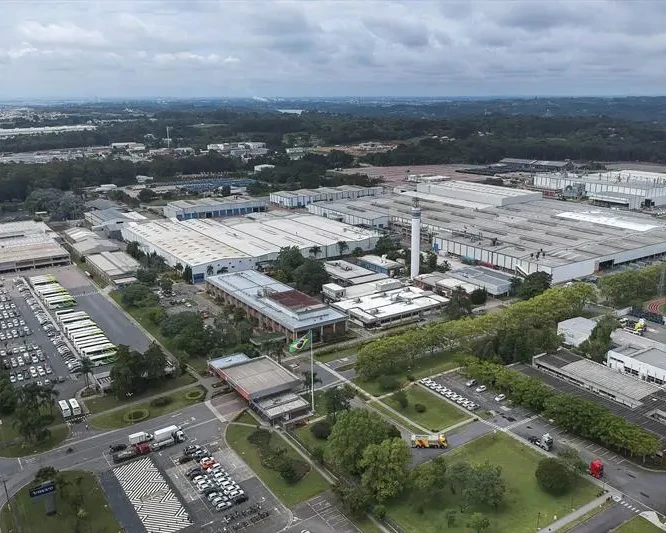

Population
A neiborhood with more than 186.000 residents
Number of companies
More than 20 thousand companies in the cic, been industries, comercies and comanies of services
Citizenship Street
The street is located in a neighborhood where there are many services from State and City hall, how:
ICC Regional Administration
Commercial Registry
Regional Center for Planning, Finance and Budget
Entrepreneurial Space
Regional Center for Urbanism
National Employment System Service Unit
Job bank in our partners
Commercial Information Requests
More than 12 thousand requests monthly
Find the ideal opportunity
Number of members
There is more than 2 thousands of associates
 
